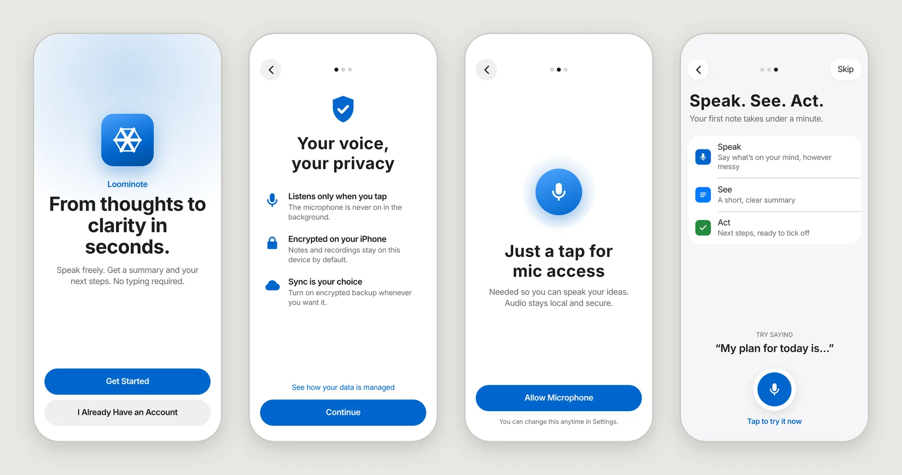
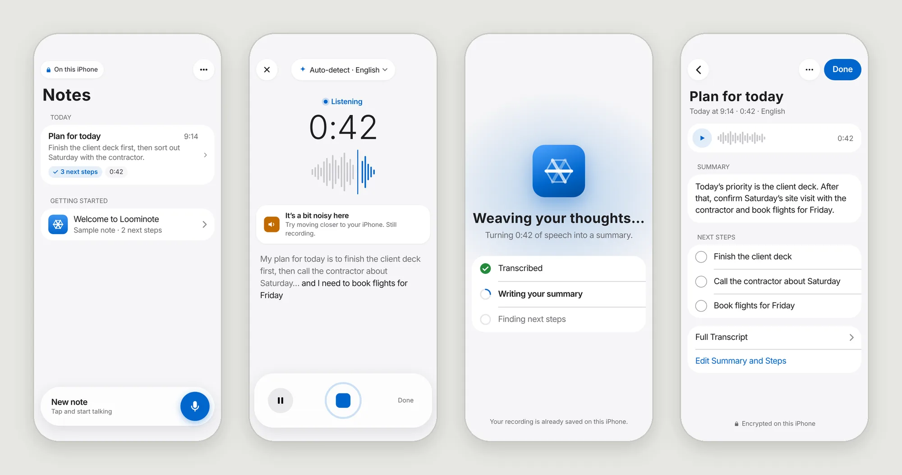
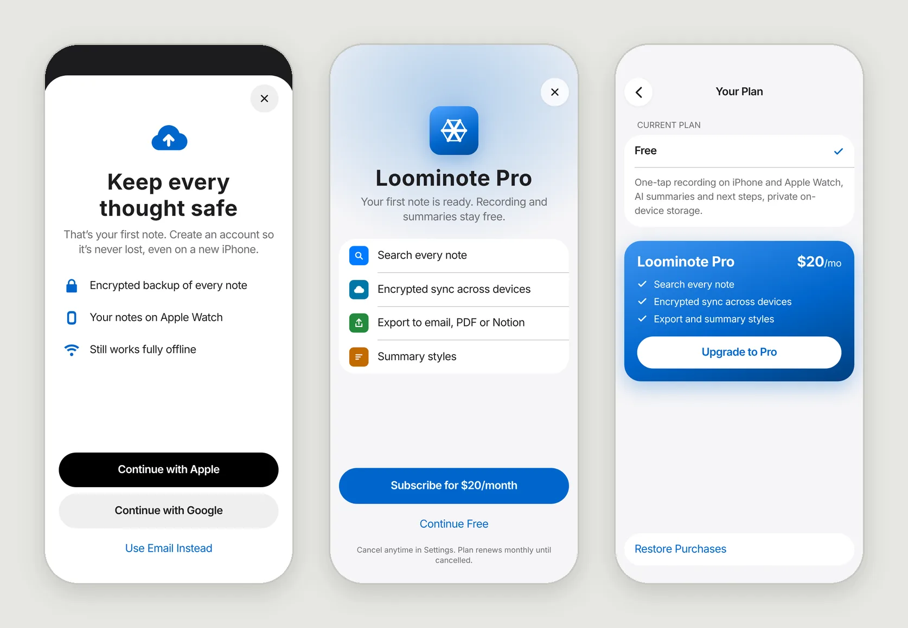
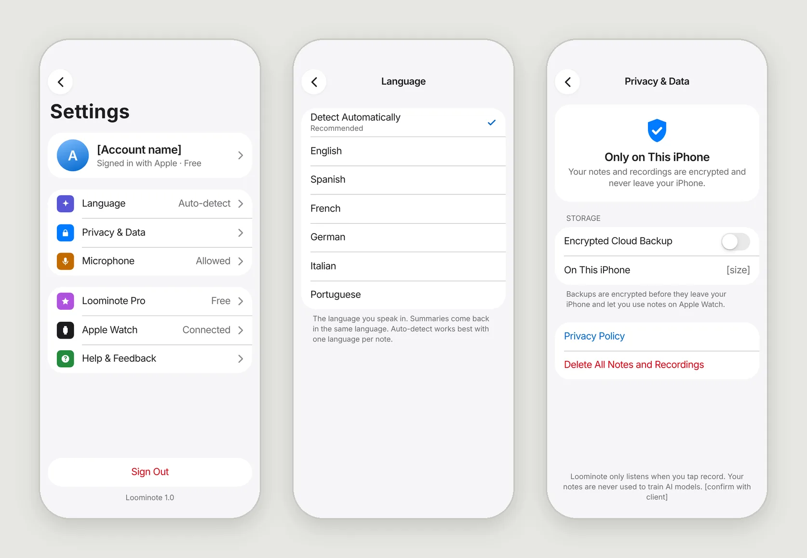
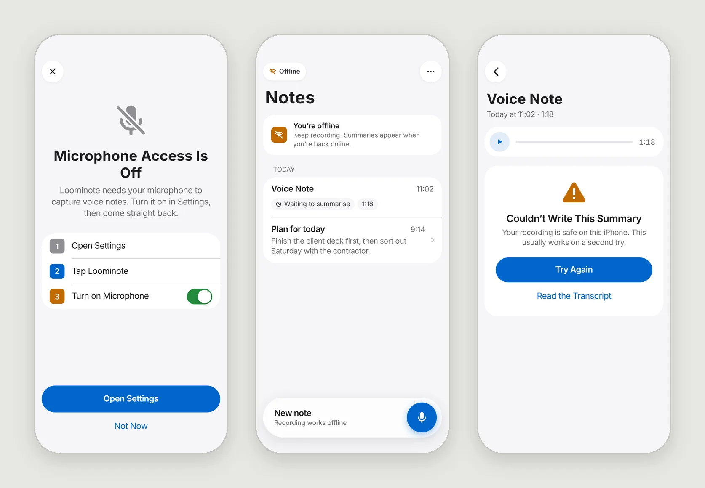
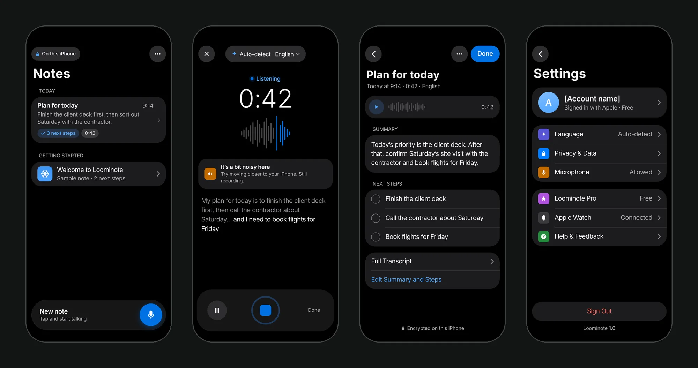
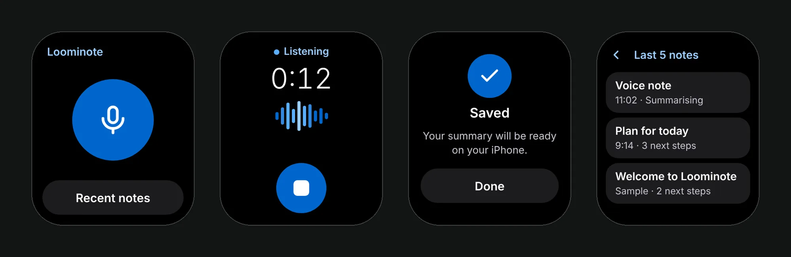

Every question before the first note costs sign-ups
Busy people think out loud all day, but typing is slow, note apps are cluttered and task managers don’t know why you wrote something down. Loominote’s promise: chaos in your head, then a summary, then clear next steps. The AI needs context to personalise, yet every question up front loses people. I set three principles to judge every screen against.
Every rival asks for something first
- VoicenotesAbout 13 screens: carousel, 7 profile questions, promos, a rating request, account, then a paywall.
- CoconoteNo account, but three paywall screens straight after the splash.
- Otter.aiPlan, email, teammate invites, then role questions.
- FathomDesktop app, Zoom extension, calendar sync and a walkthrough.
Four screens to the first note
My first flow followed the market leader’s profile questions. Judged against the principles, only language survived, because it changes transcription. “How did you hear about us?”, age, feature promos and the early rating request were cut. I added a privacy screen before the mic prompt and moved the paywall after the first summary. The last screen asks you to speak, not to answer.

Speak, see, act
- Home. The mic is always one tap away, and a sample note means nobody lands on an empty screen.
- Recording. A live transcript, and a nudge when the room is noisy.
- Summary. The summary, then next steps as a checklist, with playback and the transcript.


Ask after the first win
The account prompt follows the first note, and the upgrade follows the first summary, with Continue Free as an equal choice. Recording and summaries stay free.
Privacy you can see, nothing lost
Detect language is the default, so most people never touch it. Encrypted backup is one switch. When the mic is off, the device is offline or a summary fails, the screen says first that the recording is safe.


From soft violet to Apple-native, light and dark
The first onboarding shipped in soft violet. For the full app I rebuilt it on Apple’s Human Interface Guidelines, with Apple blue and the woven hexagon mark carrying the identity. 35 colour tokens with light and dark values, nine iOS components, and every key text pair passing WCAG AA in both themes.


The best onboarding question is often the one you don’t ask
- 4 screens to the first note, down from about 13
- No typing before the first note; 1 of 7 profile questions kept
- 32 screens across iPhone, Apple Watch and dark mode on one token system
- Time from install to first note, target under 60 seconds
- Onboarding completion
- Share of people who record in their first session